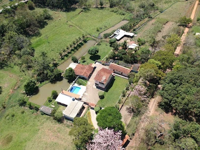

COMO CHEGAR
Sítio Calmaria
Rodovia Ubá–Rio Branco (Ubá–Vrbranco), km 8, na região de Ubá Pequeno. A cerca de 7,4 km do centro de Ubá e a 200 m do asfalto.
W4H4+53 · Ubá, MG · 36500-000

COMO CHEGAR
Rodovia Ubá–Rio Branco (Ubá–Vrbranco), km 8, na região de Ubá Pequeno. A cerca de 7,4 km do centro de Ubá e a 200 m do asfalto.
W4H4+53 · Ubá, MG · 36500-000
